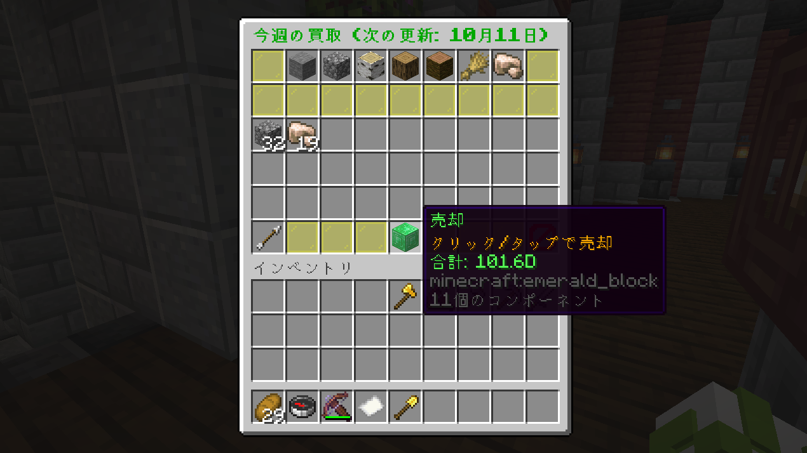

サーバー・ワールド一覧
メインサーバー
メインサーバーは、サバイバル生活と資源採取を楽しむための2つのワールドで構成されています。メインサーバーには/smainで移動できます。
メインワールド

つぶ鯖のメインワールドです。ここではサバイバル生活を楽しむことができます。
広大な土地には様々なバイオームが広がっており、建築や農業、冒険など多彩な活動が可能です。
他のプレイヤーと交流したり、協力して大規模なプロジェクトに挑戦することもできます。
メインワールドは定期的にバックアップされており、安心して長期間のプレイが楽しめます。
つぶ鯖の中心地であり、最も活気のある場所です。ぜひここで新しい生活を始めてみてください！
/mainで移動可能。
資源ワールド

資源採取とダンジョン探索がメインのワールドです。鉱石や木材などの資源を自由に採掘・収集できます。
低確率で出現する強化モブに挑戦して、特別なアイテムや大量の経験値を獲得することもできます！
このワールドは定期的にリセットされるため、常に新しい環境で冒険や資源集めを楽しめます。
建築には不向きですが、メインワールドでの活動を支える重要な場所となっています。
/resで移動可能。
トラップサーバー
装置やトラップの建築に特化した専用サーバーです。トラップサーバーには/trapで移動できます。
トラップワールド
装置やトラップの建築に特化したワールドです。メインサーバーとは異なり、自由に装置を作成できます。
例えば、自動化された農場やモブトラップ、複雑なレッドストーン回路など、創造力を存分に発揮できる場所です。/trapで移動可能。
※バイオームはバニラの地形です
参加後のガイド

まずはじめに、村長さんに話しかけて初心者キットをもらいましょう。
キットには生活に役立つアイテムが入っています。キットのアイテムで使用できる機能は以下の通りです。
・コンパス：左クリックでサーバーのメインメニューを開きます
・紙：右クリックで土地の情報を確認できます。
・金のシャベル：土地保護の範囲選択に使用します。→土地保護の方法はこちら
・金の斧：右クリックでコマンドいらずでsethomeできます。

次に、メインメニューで職業選択をクリック（もしくは/jobs join）で職業選択画面を開いて職業に就きましょう。
職業に就くことでお金を稼いだり、特別なアイテムを作成したりできます。
どの職業も無料でいつでも変更可能です。自分のプレイスタイルに合った職業を選び、サバイバル生活をより充実させましょう。

また、初期地にいる運営ショップに話しかけて便利なアイテムを買いましょう。
運営ショップでは、サバイバル生活に少し役立つアイテムを手に入れることができます。
例えば、食料や便利な道具、基礎の建築資材などが揃っています。
運営ショップ以外にも、プレイヤーショップを活用して他のプレイヤーと取引を楽しむこともできます。詳細はショップタブへ

さあ、出発しよう
これで基本的な準備は完了です。
あとは自分のペースでサバイバル生活を楽しみましょう。
グラップラーで縦横無尽な移動と冒険を楽しんだり、
友達と一緒に大きな建築プロジェクトに挑戦したり、
自分だけの遊び方を見つけてください。
つぶ鯖での新しい生活が素晴らしいものになりますように！
基本コマンド
/menu
サーバーのメインメニューを開きます
/gmenu
土地のメニューを開きます
/sethome
ホームを設定します
/thome
ホーム一覧メニューを開きます
/pay プレイヤー 金額
プレイヤーに送金します
/pshop
プレイヤーショップを開きます
/jobs join
職業に就きます
/spawn
メインワールドのスポーン地点に戻ります
/tpa プレイヤー
プレイヤーにtp申請を送ります
/back
死亡場所にtpします
/main
メインワールドに移動します
/res
資源ワールドに移動します
/trap
トラップサーバーに移動します
/smain
メインサーバー（メインワールド・資源ワールド）に移動します
/rec
特殊アイテムのクラフトレシピを確認できます
土地保護
つぶ鯖では GriefPreventionプラグインを導入しており、建築や自分の大切なものを安全に守ることができます！
他のプレイヤーによる荒らしを心配する必要はありません。自分や仲間との空間を自由に作り上げましょう！
土地を保護するとどうなるの？
- 建築物の保護 – 自分の保護したエリアでは、他のプレイヤーはブロックを壊したり置いたりできません。
- チェストの安全 – 保護範囲内のチェストやドアも勝手に操作されません。
- 柔軟な設定 – 友達だけを追加して一緒に使うことも可能。協力プレイも安心です。
- 荒らし対策 – 土地を保護することで、いたずらや荒らし行為を未然に防止します。
- 安心したサバイバル生活 – 自分の拠点や建築物を長期間安心して維持できます。
土地保護の作成手順

1. 保護範囲の設定
金のシャベルを持って、保護したいエリアの対角線上の2点をそれぞれ右クリック/タップで選択します。
2. 土地の管理
範囲を設定したあと、/gmenuで土地のメニューを開いて保護の設定などを行えます。詳細は動画を確認
3. 土地の情報
紙を持って保護した土地に右クリックで土地の情報を見れます
4. 土地の設定について
下の動画を参考に土地の管理や保護ブロックの購入、友達の追加などを行いましょう。
土地のチュートリアル動画
フラグ・権限一覧 | ◯ = フラグ ▢ = 権限
| フラグ・権限 |
説明 |
| ◯PvP |
土地内でのPvPの許可を設定できます。 |
| ◯モブのスポーン防止 |
土地内でのすべてのモブのスポーンを防ぎます。 |
| ◯敵モブのスポーン防止 |
土地内での敵対モブのスポーンを防ぎます。 |
| ◯敵モブ防止 |
土地内での敵対モブのスポーンと敵対モブによる攻撃を防ぎます。 |
| ◯畑荒らし防止 |
土地内で農作物が踏み荒らされるのを防ぎます。 |
| ◯ウィザーダメージ許可 |
土地内でのウィザーによるダメージの許可を設定できます。 |
| ◯火のブロックダメージ防止 |
土地内でブロックが火のダメージを受けるのを防ぎます。 |
| ◯火の延焼防止 |
土地内での火の延焼を防ぎます。 |
| ◯火の延焼防止 |
土地内での火の延焼を防ぎます。 |
| ◯落下ダメージ防止 |
土地内でプレイヤーが落下ダメージを受けるのを防ぎます。 |
| ◯液体の流れ防止 |
土地内で液体（水など）が流れるのを防ぎます。 |
| ◯氷の生成防止 |
土地内での氷の生成を防ぎます。 |
| ◯葉の自然消滅防止 |
土地内での葉の自然消滅を防ぎます。 |
| ◯雪の生成防止 |
土地内で雪がつもるのを防ぎます。 |
| ▢土地の訪問者 |
土地内でレバーやドア、フェンスゲートなどの操作ができます。 |
| ▢土地の利用者 |
訪問者の操作に加え、チェスト・樽・かまどなどの操作ができます。 |
| ▢土地の建築者 |
利用者の操作に加え、ブロックの設置や破壊などの操作ができます。 |
ショップ
つぶ鯖では、運営ショップとプレイヤーショップの2種類のショップがあります。
運営ショップでは生活に役立つアイテムを購入でき、プレイヤーショップでは他のプレイヤーが出品しているアイテムを購入したり、自分のアイテムを販売したりできます。
どちらのショップもサバイバル生活をより便利に、楽しくするための重要な要素です。
以下でそれぞれのショップの利用方法について説明します。
プレイヤーショップでの購入
/pshopでショップを開き、「商品を見る」で他のプレイヤーが出品しているアイテムを閲覧・購入できます。
取引はサーバー内通貨で行われ、売買を通じて他のプレイヤーと交流できます。
アイテムの出品

出品したいアイテムを手に持って
"/pshop(s) sell 個数 価格"
でアイテムを出品できます。

出品が成功するとメッセージが表示されます。
/pshop → 「自分のショップを見る」で出品管理可能。
アイテムが売れると自動でお金が口座に入ります。
不要になった出品は「出品をキャンセル」でキャンセルできます。
運営ショップでの購入
初期地にいる運営ショップNPCに話しかけて便利なアイテムを買いましょう。
運営ショップでは、建材は固定ショップと週替りの特売ショップ、その他食料や便利な道具などが揃っています。

運営買取ショップ
初期地にいる買取ショップNPCに話しかけると、集めたアイテムを売ることができます。
買取価格はアイテムごとに決まっておりまとめて売ることも可能です。
買い取るアイテムは定期的に変更されるため、こまめにチェックしてお得に売りましょう。
独自機能
つぶ鯖では通常のサバイバル生活をより楽しく、便利にするための独自機能をいくつか実装しています。これらの機能を活用して、自分だけのプレイスタイルを見つけましょう！
壁登り
壁登り機能を使うと、特定のブロックを登ることができます。
例えば、土や石などのブロックを登ることができ、建築や探索の幅が広がります。
メインハンドに何も持たない状態で、壁に向かって右クリックで登れます。スタミナを消費するため、使いすぎには注意しましょう。
登った状態でジャンプ長押しで上に登れて、しゃがみで降りれます。壁から離れると解除できます。
グラップラー
グラップラーは、遠くの場所に素早く移動できる便利なアイテムです。
メインハンドの場合は左クリックで、オフハンドの場合は右クリックで使用できます。
ワイヤーがでた状態で左クリック（オフハンドは右クリック）もしくはアイテム持ち替えで解除できます。
クラフトすることで入手可能です。レシピの確認は/rec
落下ダメージはあるので高い場所からの移動には注意しましょう。
強化モブ
資源ワールドでは、低確率で強化されたモブが出現します。
強化モブは通常のモブよりも強力で、倒すのは一筋縄ではいきませんが、倒すと特別なアイテムや大量の経験値を獲得できます。
強化モブに挑戦して、サバイバル生活にスリルを加えましょう！
強化モブが出現したらメッセージが表示されるので、見逃さないようにしましょう。
バックパック
バックパックは、追加のインベントリスペースを提供する便利なアイテムです。
バックパックを持って右クリックで開き、アイテムを収納できます。
バックパックは3種類あり、各バックパックは異なるサイズのインベントリを持っています。
一番グレードの高いバックパックは54スロットの大容量で、たくさんのアイテムを収納できます。
クラフトすることで入手可能です。レシピの確認は/rec
困ったときは
困ったときは、Discordの#管理班への連絡で相談や
サーバー内で/tell Donchanikiで直接質問することができます。
なにか困ったことがあれば気軽に相談してください！